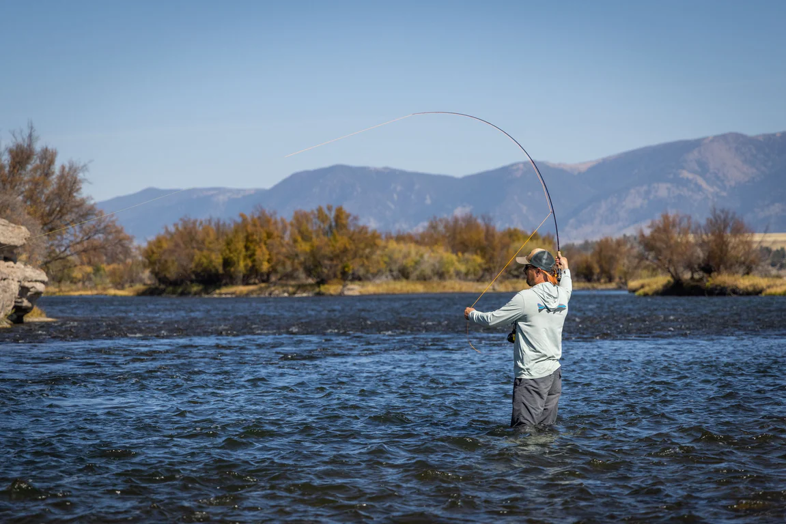
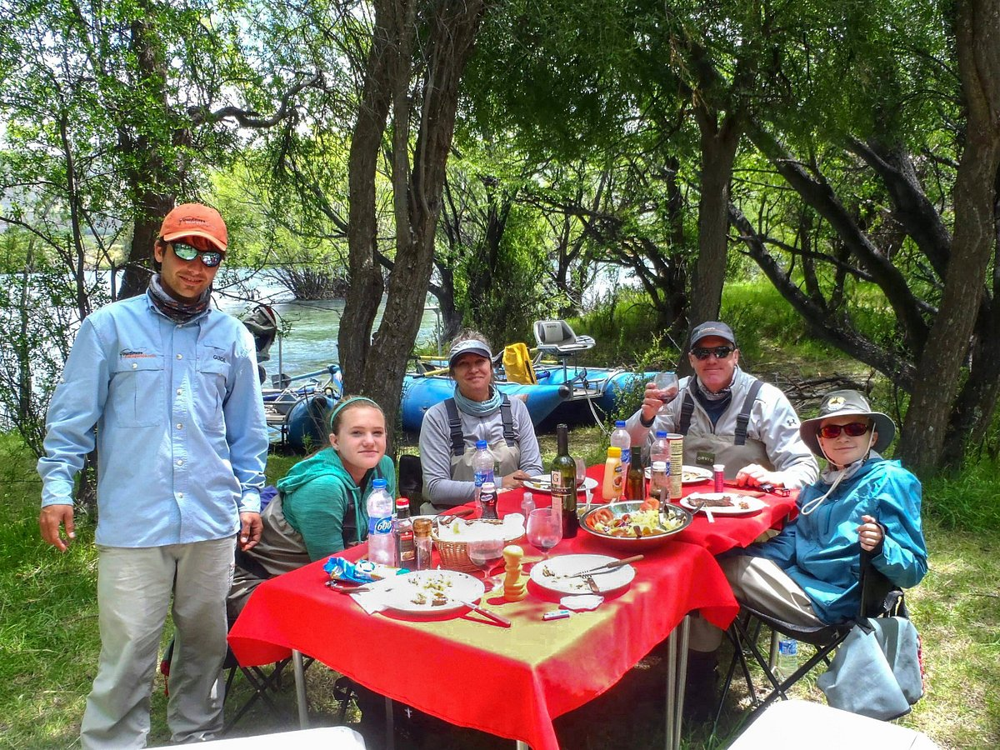

PATAGONIA OUTFITTERS
¿QUIÉNES SOMOS?

Somos una empresa dedicada a las actividades Outdoor que opera hace mas de 10 años en la Patagonia Norte. Contamos con guias especializados en pesca con mosca en modalidad vadeo y flotada, que te van a instruir y ayudar a superar cada desafio que encuentres en el rio, adaptándonos al conocimiento y experiencia previa de cada pescador.
¿POR QUÉ ELEGIR LA PATAGONIA NORTE?

Conocida por sus lugares pristinos, sumado a la variedad de ambientes y su gastronomía, hacen que nuestros destinos se ubiquen entre los mas solicitados a nivel internacional, tanto para pescadores, como para familias que quieran disfrutar la experiencia y conocer mas sobre nuestra cultura